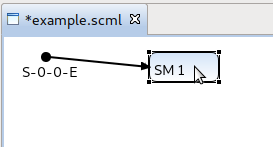
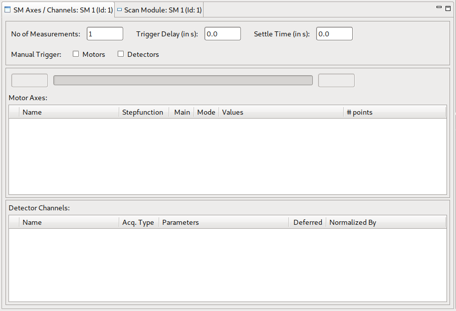
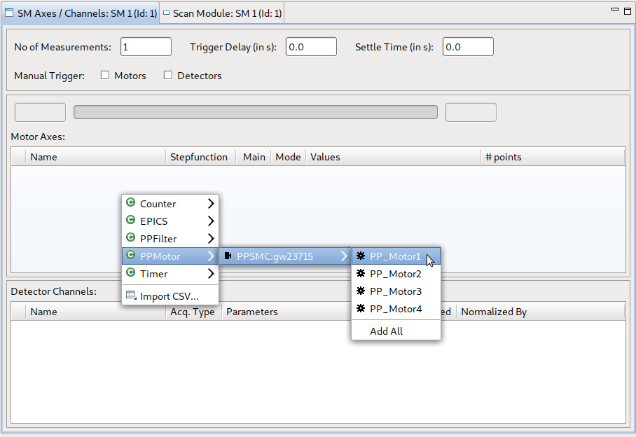
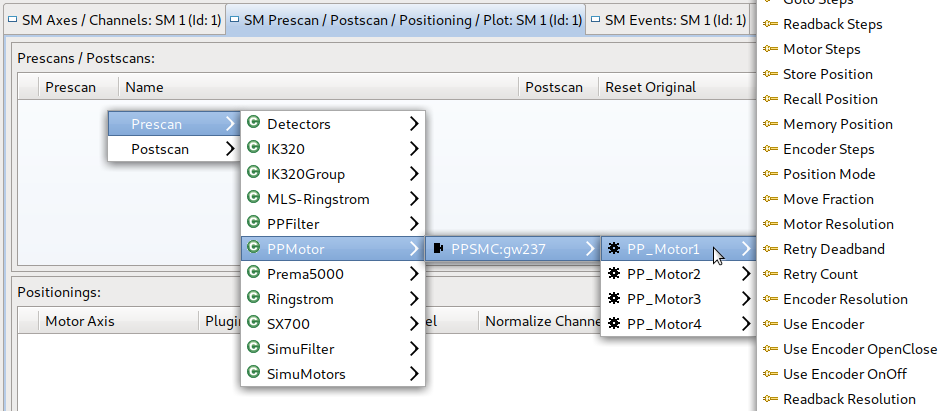
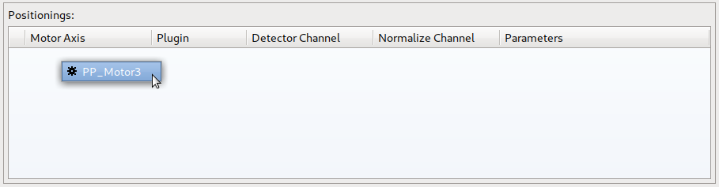
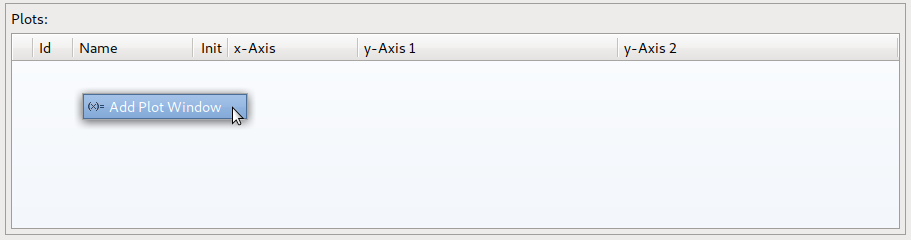

To add a device (e.g. a motor axis) to a scan module follow these steps:
In the Editor, select the scan module the device should be added to by (left-)clicking on it:

The previously empty SM Axes / Channels View and Scan Module View now shows the contents of the scan module just selected.

To add an axis or channel to the selected scan module, select the SM Axes / Channels View and right-click in the white area of the corresponding table to open a context menu showing all devices (ordered by classes). Navigate to the axis you want to add and click on it (or click on add all to add all devices of the class). Note that depending on the current device definition and configuration (class names) different devices are shown.

Afterwards properties of an axis and properties of a channel can be edited.
To add a Pre-/Postscan to the selected scan module, select the SM Prescan / Postscan / Positioning / Plot View and right-click in the white area of the corresponding table to open a context menu. Select either prescan or postscan and navigate to the device/option you want to add.

Properties of added Pre-/Postscans can be edited afterwards.
To add a Positioning to the selected scan module, select the SM Prescan / Postscan / Positioning / Plot View and right-click in the white area of the corresponding table to open a context menu. Motor Axes available for positioning are shown and can be selected. Remember that nothing will be shown, if the scan module contains no axes (or every axis is already defined as a positioning).

Properties of added Positionings can be edited afterwards.
To add a Plot Window to the selected scan module, select the SM Prescan / Postscan / Positioning / Plot View and right-click in the white area of the corresponding table to open a context menu and click on “Add Plot Window”.

Properties of added Plot Windows can be edited afterwards.